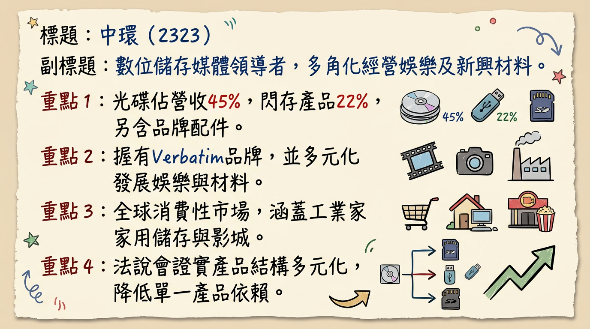
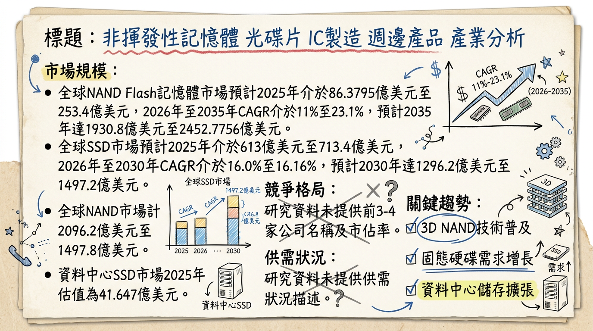
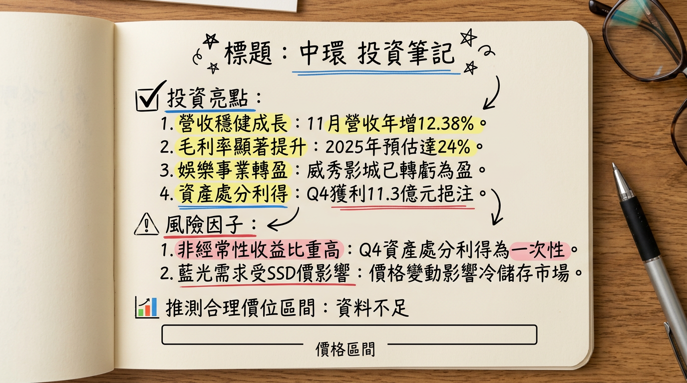

2323 中環 深度研究報告
一句話摘要
中環 (2323) 成功從傳統光碟製造商轉型為多元化品牌服務商，在SSD/Flash漲價及高階藍光光碟需求驅動下，儲存媒體業務強勁成長，旗下Verbatim品牌擴大市場版圖，威秀影城營運亦轉虧為盈。2025年毛利率預估達24%，公司財務結構穩健，配合資產活化，預期2026年營運將持續穩健成長。
公司概覽
中環股份有限公司（2323）成立於1978年12月2日，1992年2月17日上市。公司業務已從傳統光碟製造轉向多元化發展，涵蓋儲存媒體、品牌事業、娛樂事業及新興材料。
核心產品與服務：
- 儲存媒體： 光儲存媒體（DVD-R、BD-R）、數位存儲（SSD、USB、記憶卡）。
- 品牌事業： 國際品牌Verbatim，產品線廣泛涵蓋消費性電子產品。
- 娛樂事業： 經營威秀影城。
- 新興材料： 光電材料與鋰電池模組研發製造。
業務營收佔比（2025年12月12日法說會資料）：
| 產品線 | 營收佔比 |
|---|
| 光碟 (OD) | 45% |
| 閃存 (Flash) | 22% |
| 配件 (Accessory) | 24% |
| 其他 | 9% |
光電業、電子下游-其他、電腦及週邊設備、高階光碟市場（國防、醫療100G/200G光碟）、非揮發性記憶體（SSD、Flash）、熱冷儲存鏈（衛星高解析影像）、光電材料與鋰電池模組、娛樂產業。
核心競爭優勢
成功轉型與毛利率提升： 公司已成功從傳統製造業轉型為品牌服務業，毛利率從2019年的15%顯著提升至2025年預計的24%。
全球品牌影響力： 旗下Verbatim品牌擁有超過50年歷史，銷售網絡遍及全球120多個國家，涵蓋5,000多個實體通路及電商平台，在歐日等成熟市場銷售強勁，年增長11-15%。
儲存媒體供應鏈優勢： 憑藉長期供應鏈佈局，在SSD與Flash全球供應吃緊及價格上漲趨勢下，能保持穩定供貨與價格優勢，市佔持續擴大。
互補的儲存策略： 高容量藍光光碟定位於衛星高解析影像等高資料量產業的「冷儲存」市場，與SSD的「熱儲存」市場形成互補，滿足全儲存鏈需求。
娛樂事業復甦與領先： 威秀影城本年度已轉虧為盈，觀影人次與市佔率穩居全台第一，提供穩定的現金流貢獻。
資產活化能力： 透過處分南亞科、新盛力等有價證券，成功實現處分利益約新台幣1,779萬元及2,134萬元，強化財務彈性。
財務分析
月營收趨勢：
| 月份 | 金額 (新台幣億元) | 月增率 (MoM) | 年增率 (YoY) |
|---|
| 2026/01 | 7.53 | 23.53% | 27.8% |
| 2025/12 | 6.10 | -9.04% | -0.73% |
| 2025/11 | 6.70 | 5.33% | 12.38% |
| 2025/10 | 6.37 | 0.29% | -10.9% |
| 2025/09 | 6.35 | 7.34% | -0.36% |
| 2025/08 | 5.91 | -5.67% | -4.41% |
- 毛利率：23.29%
- 營業利益率：2.10%
- EPS：0.83元
年度趨勢：
- 2024年實際： 全年營收 74.35 億元，全年 EPS -0.27 元。
- 2025年預估： 累計至2025年12月營收約 71.83 億元。累計至2025年第三季 EPS 為 0.37 元。
法說會重點
日期： 2025年12月12日 (凱基證券線上法人說明會)
管理層發言與 guidance：
- 公司定位與策略： 已成功轉型為品牌導向的服務業，核心策略為追求穩健獲利，預計2025年毛利率將達到24%，較2019年的15%大幅提升。
- 儲存媒體業務：
* SSD與Flash價格上漲且全球供應吃緊，Verbatim憑藉長期供應鏈佈局，展現穩定供貨與價格優勢，市佔持續擴大。
* 高容量藍光光碟用於衛星高解析影像等高資料量產業的長期備份，與SSD的「熱儲存」市場形成互補，共同帶動全儲存鏈需求。
* 擁有超過50年歷史，產品線涵蓋光碟、USB、記憶卡、SSD及其他消費性電子產品。
* 銷售網絡遍及全球超過120個國家與5,000個實體通路，在歐洲、日本等成熟市場銷售強勁，較去年增長11%至15%。
* 透過Amazon等電商平台積極拓展新興市場。
* 市佔率穩居全台第一，營運表現已轉虧為盈，觀影人次與市佔率均恢復至疫情前水準。
* 未來將持續增加據點、更新設備，並開發周邊商品以提升營收。
- 產品組合變化： 光碟佔集團營收比重已從2019年的86%大幅下降至2023年的45%。2023年產品組合為：光碟45%、消費性電子周邊(Accessory) 24%、Flash 22%。未來成長動能主要來自Accessory與Flash兩大類別。
- 資本支出與產能利用率： 法說會資料中未提及具體的產能利用率和資本支出金額。
- 下季/下半年 guidance： 預期在SSD價格上漲及藍光光碟冷儲存需求增加的雙重效益下，儲存媒體業務將持續成長；品牌事業將深化歐美日市場並拓展新興市場；娛樂事業預期2026年將持續成長。中環董事長翁明顯預期，高階光碟市場供不應求將帶動2025年整體毛利率持續攀升。
券商觀點
目前未找到 2025-2026 年券商對中環（2323）的具體目標價、EPS預估及評等調整資訊。
| 券商名稱 | 目標價 (新台幣) | 評等 | 日期 |
|---|
| N/A | N/A | N/A | N/A |
財報深度分析
利潤率趨勢
| 季度 | 毛利率 | 營業利益率 | 稅前淨利率 | 稅後淨利率 |
|---|
| 2025年第三季 | 23.29% | 2.10% | 50.93% | 49.01% |
中環在2025年第三季達成「三率三升」（毛利率、營業利益率、淨利率同步提升）。其中，2025年Q3的營業利益為39.09M美元，營業利益率為2.1%，與去年同期相比成長146.2%。這反映了公司產品組合優化、品牌轉型效益以及高階儲存產品需求帶來的獲利能力改善。
存貨分析
目前未找到2024-2026年的最新存貨金額、存貨週轉天數趨勢，以及存貨是否有異常堆積或備料現象的具體資料。
資本支出
目前未找到2024-2026年的最新資本支出金額與趨勢、未來資本支出計畫與預計新增產能的具體資料。
其他財報重點
中環期末持有現金及約當現金總額為2.19B美元，佔總資產比率為0.08。流動比率與速動比率皆反映其短期償債能力穩健。高水位現金代表企業具備良好的資金調度彈性，可支應營運需求、擴張投資或股東回饋政策。
股權異動
- 處分南亞科持股獲利（2026年1月30日）： 2026年1月6日至29日期間，處分南亞科（2408）共1,200張持股，交易均價261.7元，總金額約3.14億元，實現處分利益約1,779萬元。交易後，仍持有約28萬股南亞科普通股。
- 處分新盛力持股獲利（2025年8月22日）： 公告處分新盛力普通股，交易總金額約3.61億元，處分利益約2,134萬元。
- 取得群聯普通股（2026年2月26日）： 2026年2月11日至2026年2月26日期間，取得群聯普通股205仟股，總金額約3.94億元。累計持有餘額365仟股，金額約7.21億元，持股比例0.18%。
- 取得南亞科普通股（2026年3月3日）： 2026年2月23日至2026年3月3日期間，取得南亞科普通股1,547仟股，總金額約4.24億元。累計持有餘額2,182仟股，金額約6.01億元，持股比例0.07%。
- 股利政策（2025年）： 董事會通過，2025年每股配發現金股利0.3元。除息交易日為2025年9月4日，現金發放日為2025年10月3日。
- 董監事/大股東申報轉讓、庫藏股、可轉債、增減資： 目前未找到2025-2026年的最新相關具體資料。
產業分析
市場規模與CAGR成長率
中環主要涉足NAND Flash/SSD、光電材料及鋰電池模組市場。
- NAND Flash / SSD / 記憶卡市場：
* 全球3D NAND Flash市場規模：2025年253.4億美元，預計2026年成長至296.6億美元，2026-2035年CAGR為23.1%，至2035年達1930.8億美元。
* 全球SSD市場規模：預計從2025年的713.4億美元成長到2026年的828.2億美元，CAGR為16.1%。
* 資料中心SSD市場：2025年估值41.647億美元，預計2026年達44.951億美元，2026-2034年CAGR為7.5%。
* 全球光電市場：預計從2025年的436.9億美元成長到2026年的562.8億美元，CAGR達28.8%。
* 光電材料市場：預計2026-2033年CAGR為20.20%。
* 全球鋰離子電池市場：2024年估計752億美元，2025-2034年CAGR為15.8%。
* 全球鋰市場規模：2025年164.6億美元，預計從2026年的195.2億美元增長到2034年的784.9億美元，CAGR為18.90%。
供需狀況
* 目前處於供需嚴重失衡狀態，預計2026年第一季整體NAND Flash價格將季增85%~90%。
* AI伺服器儲存需求暴增，刺激企業級SSD需求爆發式成長，加上HDD嚴重缺貨，使NAND Flash短缺情況惡化。
* 高盛預估2026年NAND供需缺口將達4.2%，企業級SSD需求成長率在2026年預估將飆升至58%。
* 原廠將產能幾乎全數傾斜給AI伺服器，導致消費級SSD供應受到擠壓，價格維持高檔。
* 22025年全球儲能市場擴張超乎預期，加上電動車市場成長，逐漸將鋰電池產業從供過於求推向供需平衡，部分環節甚至轉向「緊平衡」。
* 預計2026年中國鋰電池產業鏈將迎來「第三輪」擴產週期，但新增產能短期內難以完全彌補供需缺口，關鍵材料仍將維持供應緊張。
產業平均毛利率水準
目前未找到2025-2026年NAND Flash、SSD、記憶卡、光電材料或鋰電池模組產業的平均毛利率水準的具體數據。
競爭格局
NAND Flash 產業 (2025年第四季營收表現)：
| 排名 | 公司名稱 | 2025年第四季營收 (億美元) | 季增率 | 市佔率 |
|---|
| 1 | Samsung (三星) | 66 | 10% | 28% |
| 2 | SK Group (SK海力士、Solidigm) | 52.1 | 47.8% | 22.1% |
| 3 | Kioxia (鎧俠) | 33.1 | 16.5% | - |
| 4 | Micron (美光) | 30.3 | 24.8% | - |
| 5 | SanDisk (閃迪) | 30.3 | 31.1% | - |
- SSD 產業： 主要經營者包括Intel Corporation、Samsung Group、Western Digital Corporation、Kingston Technology Corporation、Micron Technology Inc.等。
- 中環 vs 主要競爭對手： 中環作為數位儲存模組廠，其品牌事業Verbatim在消費性電子產品領域與眾多品牌商（如Kingston, ADATA, Transcend等）競爭。目前未找到中環與主要競爭對手在技術、產能、客戶、價格等方面的具體比較數據。
- 台灣同業比較： 目前未找到中環與台灣同業（如威剛、十銓、創見、宇瞻等記憶體模組廠）在2024年以後的營收規模、毛利率、EPS的直接對比數據。然而，同業普遍看好記憶體市場在2026年的供不應求趨勢。
產業趨勢
AI伺服器與企業級SSD需求爆發： AI對海量數據處理的需求，帶動高容量、高效能企業級SSD的瘋狂搶購，導致NAND Flash供需失衡，價格飆升。
3D NAND技術與高密度儲存： 176層及232層3D NAND技術應用，提供更高儲存密度與更低成本。原廠加速轉向122TB/245TB等大容量QLC企業級SSD，以應對AI對儲存容量與速度的要求。
固態電池技術發展： 固態電池被視為下一代電池技術，2025-2026年是從試驗線轉向量產的關鍵拐點，將為電池設備廠商帶來新市場與技術升級需求。
對中環而言的具體機會和威脅：
*
數位儲存產品線拓展： 受惠於AI及資料中心對SSD與記憶體的需求激增，Verbatim品牌數位儲存產品線將直接受益於市場需求成長和價格上漲。
* 新興材料業務： 抓住AI數據中心對備援電池模組 (BBU) 及全球電動車、儲能市場對鋰電池的強勁需求，創造新成長動能。
* 高容量產品策略： 高階光碟片（100G、200G）因國防、醫療需求旺盛而供不應求，提供利基市場成長機會。
*
原廠產能傾斜： 記憶體原廠優先供應AI伺服器用高毛利產品，可能導致中環在消費級SSD/記憶卡NAND Flash晶片採購面臨供應緊缺和成本上升壓力。
* 市場競爭激烈： 數位儲存市場競爭劇烈，需持續投入研發與品牌建設。
* 傳統光碟業務萎縮： 儘管轉型有成，傳統光碟片業務仍面臨數位化趨勢的長期挑戰。
相關投資題材的具體連結：
- AI (人工智慧)： AI伺服器對HBM和企業級SSD的需求是記憶體市場供不應求的主導因素，中環作為數位儲存產品供應商間接受益。AI數據中心建設也帶動BBU備援電池模組需求，成為鋰電池產業成長動能。
- HBM (高頻寬記憶體)： HBM產能排擠效應影響DDR5和NAND Flash供應，進而影響中環相關產品的成本和供應。
- 電動車 (EV) 與儲能系統： 電動車市場成長是鋰電池產業重要驅動力。再生能源及AI數據中心建設帶動儲能系統需求，政府補助政策也提供台灣電池芯產業新契機，中環的鋰電池模組業務有機會受惠。
- 國防軍工產業： 台灣國防自主對無人機、無人載具、低軌衛星等鋰電池需求，是中環鋰電池業務的潛在機會。
近期催化劑
利多事件清單：
- 2026年1月營收強勁： 7.53億元，月增23.53%，年增27.8%。
- 法說會確認轉型成功： 2025年12月12日，法說會強調轉型品牌服務業，毛利率顯著提升（2025預計24%），威秀影城轉虧為盈，儲存媒體市場具供貨與價格優勢。
- 資產活化顯現效益： 2025年第四季度處分資產淨利達新台幣11.3億元，強化現金流。
- SSD與Flash市場趨勢利多： 全球供應吃緊，價格上漲，中環Verbatim品牌受益。
- 高階光碟需求旺盛： 國防、醫療相關100G、200G光碟市場供不應求。
- 法人買超積極： 2026年1月6日三大法人買超逾9,500張；2月23-26日外資持續買超，總計逾2.3萬張。
- 股利政策： 2025年每股配發現金股利0.3元。
- 投資佈局： 持續取得群聯、南亞科等具產業前景的資產，優化資產配置。
利空事件清單：
- 2025年12月營收下滑： 6.10億元，月減9.04%，年減0.73%。
- 法人賣超： 2026年2月5日三大法人賣超6,070張；3月3日賣超360張；3月4日賣超4,304張。
- 總經風險： 股市波動對財務影響大（有價證券投資占總資產74.51%）。
⭐ 成長動能時間軸
*
新產品發佈： COMPUTEX 2025展示智慧儲存與行動周邊新品，包括資安固態硬碟、AI可攜式觸控螢幕、整合充電顯示器等，展現研發實力。
* 高階光碟需求： 董事長翁明顯指出，國防、醫療相關100G、200G高階光碟市場供不應求，看好毛利率持續攀升。
*
轉型效益顯現： 從傳統製造業成功轉型為品牌服務業，預計2025年毛利率達24% (2019年為15%)。
*
儲存媒體業務成長： SSD價格上漲及藍光光碟冷儲存需求增加，雙重效益驅動儲存媒體業務持續成長。
* 品牌事業拓張： Verbatim品牌在歐洲、日本等成熟市場銷售年增11-15%，並透過Amazon等電商平台積極拓展新興市場。
* 娛樂事業復甦： 威秀影城觀影人次與市佔率恢復至疫情前水準，成功轉虧為盈，預期2026年持續成長。
* 資料儲存需求： 受益於衛星高解析度影像等高資料量產業對冷儲存的需求，與SSD熱儲存互補。
*
資產活化與現金流： 2025年Q4處分資產淨利達新台幣11.3億元，預估2026年租金收入1.06億元，強化現金流。
*
產業需求驅動： NAND Flash市場持續供不應求，AI伺服器對企業級SSD需求飆升，鋰電池產業供需趨緊，均為中環相關業務帶來成長機會。
* 娛樂事業拓展： 威秀影城將持續增加據點、更新設備，並開發周邊商品。
- 擴廠、新客戶、產能擴充、資本支出： 目前未找到2025-2026年的具體最新資料。
2026 展望
成長動能：
- 產品組合優化與獲利能力提升： 成功轉型帶動毛利率顯著提升至24%，未來將持續受益於高毛利產品比重增加。
- 數位儲存市場成長： 受益於全球AI發展帶動的企業級SSD及資料中心儲存需求激增，以及NAND Flash價格上漲，中環的SSD、Flash、記憶卡及高階藍光光碟業務將持續擴大市場佔有率與獲利。
- 品牌事業全球擴張： Verbatim品牌在歐、日市場的強勁增長，以及電商平台對新興市場的滲透，將持續貢獻穩健營收。
- 娛樂事業穩健復甦： 威秀影城已轉虧為盈並保持市佔第一，未來據點擴增與營運優化將帶來持續性增長。
- 新興材料潛力： 光電材料及鋰電池模組業務有望受惠於電動車、儲能、AI數據中心BBU及國防軍工等產業的發展。
- 資產活化效益： 2025年資產處分實現可觀利益，未來租金收入與持續優化的資產配置將增強公司財務彈性。
風險：
- 技術替代與市場競爭： 傳統光碟市場持續萎縮，數位儲存市場競爭激烈，公司需不斷創新並維持競爭力。
- 原廠產能分配： 記憶體原廠優先將產能提供給高毛利的AI伺服器相關產品，可能影響中環消費級產品的晶片採購成本與供貨穩定性。
- 股市波動的財務影響： 公司有價證券投資占總資產比重高達74.51%，使股市波動對公司財務表現影響甚鉅，儘管公司表示將優化資產配置，仍需持續關注。
- 總體經濟不確定性： 全球經濟成長放緩、通膨、匯率波動及地緣政治風險等，仍可能對消費需求及公司營運造成潛在衝擊。
投資結論
中環（2323）已成功走出傳統製造業的陰霾，透過產品組合優化、品牌轉型及策略性資產配置，迎來顯著的營運轉機。我們認為其投資價值主要體現在以下三點：
獲利能力顯著改善與多元成長引擎： 2025年預計毛利率提升至24%，搭配SSD/Flash市場漲價趨勢、高階藍光冷儲存的利基需求，以及Verbatim品牌與威秀影城的穩健貢獻，形成多元且具韌性的成長動能。2025年第三季EPS達0.83元，顯示其獲利能力已明顯轉強。
產業趨勢浪潮下的受惠者： 在AI伺服器對高容量、高效能SSD的龐大需求驅動下，NAND Flash市場供不應求、價格飆升，中環作為數位儲存產品供應商直接受益。同時，其在鋰電池模組的佈局也搭上電動車、儲能及國防軍工產業的成長順風車。
穩健的財務體質與資產活化潛力： 公司擁有高水位現金，流動性良好，且持續透過處分有價證券活化資產，強化現金流並支持長期擴張，有助於抵禦市場風險。
綜合公司成功轉型、強勁的成長動能以及優化的財務結構，我們看好中環2026年的營運表現將持續向上。考量其在記憶體模組市場的成長潛力、品牌價值的提升及新興材料的佈局，建議目標價區間為 新台幣 28元 - 35元。
本報告由 AI 自動產生，資料來源為公開網路資訊，僅供參考，不構成投資建議。產生時間：2026-03-06 13:01
📊 資訊卡


